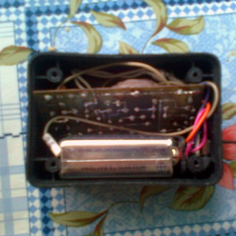

Как копать картошку мотоблоком. Как копать картофель мотоблоком? | Зелёный сад
Зелёный сад
Всё для дачи и сада
Main menu
Главная Новости СтатьиYou are here
Главная » НовостиКак копать картошку мотоблоком. Как копать картофель мотоблоком?
Популярные материалы
Today's:
Туя в горшке зимой на улице форум. Подготовка туи к зиме — укрытие и правильный уход У лавра засохли листья, что делать. Почему у лавра чернеют и сохнут листья? Кипарис Голдкрест Вилма можно ли держать дома. Кипарис Голдкрест Вилма Название комнатных растений и их родина. Комнатные растения: родина, виды, уход Глотать чеснок целиком польза. Будет ли польза от чеснока, если просто проглотить зубчик, не разжевывая Алоэ пятнистое лечебные свойства. Полезные свойства культуры Птичий помет, как вносить осенью. Куриный помет, как удобрение: рекомендации по внесению22.10.2019 в 07:35 Новости Содержание Как копать картошку мотоблоком. Как копать картофель мотоблоком? Преимущества использования картофелекопалки Эффективность использования зависит от настройки Копаем картошку мотоблоком нева. Основные сведения Картофелекопалка для мотоблока. Веерная картофелекопалка для мотоблока Делаем веерную картофелекопалку своими руками Копаем картошку мотоблоком. Как копать картошку мотоблоком Уборка картошки Особенности процесса копания Как убрать картошку мотоблоком. Преимущества механической уборки Распашка картофеля мотоблоком. Прополка картофеля мотоблоком Прополка междурядий картошки мотоблоком Лапы Пропольник «Ежи» Копать картошку мотоблоком плугом. Самодельные
Как копать картошку мотоблоком. Как копать картофель мотоблоком?
Копка картофеля – это одно из самых тяжёлых занятий для любого огородника, вне зависимости от того, речь идёт о мужчине или о женщине. Но существует садовая техника, способная выгодным образом упростить процесс.
Картофелекопалка в сочетании с мотоблоком позволит выкопать картофель за считанные минуты. При этом человек, который выполнял означенную задачу, практически не устанет. Мотоблоком может управлять даже ребёнок!
Преимущества использования картофелекопалки
Многие огородники, которые находятся на «Вы» с техникой, наивно полагают, что использование прогрессивных методов может нанести существенный вред урожаю. Это не исключено, но только в случае некорректной настройки оборудования.
Оборудование предельно простое и представляет собой мотоблок, который сочленён с картофелекопалкой. Последняя представляет собой не что иное, как обыкновенный металлический плуг.
Он загнут под определённым углом. Настраивая картофелекопалку появляется возможность регулирования уровня заглубления. Это необходимо для комфортного хода мотоблока.
Положительные аспекты использования картофелекопалки представлены ниже:
возможность экономии времени и сил; быстрое извлечение урожая; полная его сохранность.Эффективность использования зависит от настройки
Ранее было сказано, что использовать картофелекопалку может даже ребёнок. Это действительно так, если картофелекопалка была корректным образом настроена. Всё, что требуется от человека, это направлять мотоблок и регулировать уровень тяги по направлению высадки картофеля.
Строго говоря, это же приспособление можно использовать для предварительного рыхления почвы, если требуется что-то высаживать на приусадебном участке.
Естественно, чем мощнее мотоблок, тем эффективнее и проще будет проходить весь процесс. Принимая во внимание, что означенная садовая мототехника есть практически в каждом дворе, картофелекопалка станет весьма выгодным приобретением.
Более того, отдельные модели могут быть прицеплены даже к квадроциклам. Подобный вариант используется крайне редко, но в случае, если больше в принципе нет ничего подходящего и он сойдёт (важен ведь не только результат, но и способ его достижения).
Копаем картошку мотоблоком нева. Основные сведения
В большинстве случаев мотоблоки и мотокультиваторы не применяют на больших территориях, они не смогут справиться с большим объемом работ на тяжелых почвах. Такая техника рассчитана на мелкие и средние хозяйства для работы на легких и средних грунтах.
Мотоблок «Нева» считается самым популярным у владельцев сельхозугодий агрегатом, характеризуется высокими техническими показателями, долгим сроком эксплуатации.
Мотоблоки «Нева» сами по себе мало эффективны, но с применением дополнительного оборудования способны выполнять любую сельскохозяйственную работу:
мотокультиваторы подходят дачникам и фермерам для обработки почвы; сажалки в агрегации с мотоблоком — для высадки овощных растений на земельных участках; косилки — для скашивания травяной массы; окучивание картофеля выполняют окучниками; для механизированного сбора корнеплодов применяют картофелекопалку.В последнее время фермеры используют современную агротехнику для выращивания овощных культур.
Посадка картофеля мотоблоком «Нева» значительно экономит время, позволяет обрабатывать обширные площади, способствует улучшению урожая благодаря рыхлению почвы. При этом процесс осуществляется 2 способами:
окучниками с регуляторами; навесными сажалками.Картофелесажалка для мотоблока «Нева» используется владельцами больших земельных участков. Она более эффективна: за 1 проход делает борозды в грунте, высыпает клубни из специального бункера и засыпает их землей.
Процесс уборки урожая осуществляется мотоблоком «Нева» с картофелекопалкой. Зубцы механизма зарываются в землю, выталкивают корнеплоды и укладывают их на поверхность для дальнейшего сбора вручную.
Существует несколько моделей копалок, агрегатируемых с мотоблоком «Нева»:
Веерная. Вибрационная. Включает такие известные среди аграриев модели, как: ККМ-1; модель «Картофелекопатель вибрационный»; КВМ-3; «Полтавчанка». Транспортерная или ленточная.Эти модели считаются самыми востребованными и распространенными.
Картофелекопалка для мотоблока. Веерная картофелекопалка для мотоблока
Веерная картофелекопалка имеет несколько названий. Ее также называют стрельчатой копалкой и лапой. Производители сельхозтехники называют эту модель «Дельфин» из-за характерной формы плуга (лемеха). Агрегат прост по конструкции и хорошо извлекает клубни из земли.
Копалку прицепляют к мотоблоку. Лемех острым концом взрыхляет землю. Картофель извлекается из земли, попадает на наклонную поверхность лемеха и продвигается на металлические прутья. Земля отделяется от клубней и сыплется на пашню сквозь прутья. Картофель, продвигаясь вверх по приподнятым прутьям, падает на землю, где его можно собрать.
Копка веерной копалкой допускает наличие на поле редкого и невысокого сорняка. Картофельную ботву перед уборкой урожая скашивают.
Делаем веерную картофелекопалку своими руками
Для работы понадобится болгарка, сварочный аппарат, дрель и сверла по металлу, болты. Также понадобятся материалы:
листовая сталь толщиной 3-4 мм для изготовления ножа (лемеха); болты диаметром 10-12 или более мм; стальной профиль прямоугольного сечения или толстый стальной лист для изготовления стойки-держателя и кронштейна. круглый стальной прут или арматура (не рифленая) диаметром 8-10 мм.Кроме этого, понадобится мерная лента, карандаш для черчения по металлу. Порядок работы по изготовлению веерной картофелекопалки:
В средней части лемеха сверлят два отверстия для крепления к стойке. К расширенной части ножа (слева и справа от выпуклой части) приваривают куски стальных прутов (так, чтобы они расходились вверх и в стороны «веером»). Длина прутов — 47-50 см. Иногда прутья гнут в виде маршевой ступеньки. К лемеху болтами крепят стойку-держатель. Высота стойки зависит от конструкции мотоблока. Стойку-держатель можно приварить непосредственно к плугу, не используя болты. К верхней части стойки приваривают кронштейн с заранее просверленными отверстиями (для соединения картофелекопалки с мотоблоком). Для прочности конструкции нижнюю часть лемеха, направленную к земле, усиливают приваренной полоской металла.Преимуществом веерной картофелекопалки перед другими агрегатами является ее надежность. Этот агрегат может использоваться не один год. В нем нет вращающихся частей, которые при больших нагрузках приходят в негодность. Подкапывание картофеля осуществляется быстро и качественно.
К недостаткам агрегата относят небольшую ширину вскопанной полосы (20-25 см), из-за чего потери урожая достигают 20 %. Нож веерной картофелекопалки повреждает часть клубней, из-за чего они становятся непригодными для длительного хранения и продажи.
Копаем картошку мотоблоком. Как копать картошку мотоблоком
Для копки картофеля необходимо отрегулировать глубину погружения плуга.
Как копать картошку мотоблоком, чтобы не порезать урожай? Для этого потребуется предварительная настройка механизма, а в частности, регулировка плуга, ответственного за обработку земли.
Отрегулировать глубину, на которую плуг будет погружаться в почву, можно с помощью болтов, находящихся между стойкой плуга и замком. Ослабив крепление, самостоятельно перемещают плуг вверх или вниз на нужное расстояние.Для пробного ряда устанавливают глубину погружения, равную длине штыка лопаты. Если расстояние будет меньше, выкопанные клубни окажутся повреждёнными.
Но также требуется отрегулировать угол наклона полевой доски относительно поверхности земли . Для этого выкручивают винтовую рукоять до тех пор, пока доска не окажется на земле.
Необходимо добиться поднятия задней части доски на 3–5 см от грунта . Для этого рукоятку вращают в противоположном направлении.
Уборка картошки
Плуг отрегулирован – делаем пробный проход.
После регулировочных работ приступают к пробному вскапыванию. Достаточно пройти мотоблоком по ряду 3–4 метра , собрать картофель и внимательно его осмотреть. При правильной настройке оборудования, порезанных клубней не будет. Если выявлены потёртые и порезанные картофелины, необходимо увеличение глубины хода копалки. После дополнительной настройки проходят ещё 3 м рядка и проверяют выкопанные клубни.Некоторые люди не хотят тратить время на настройку оборудования и проверку урожая, именно такие огородники и жалуются на испорченный мотоблоком урожай.
Правильная настройка гарантирует лёгкость работы с картофелекопалкой и сбор неповрежденных клубней. Поэтому настроечные работы проводят обязательно.
Особенности процесса копания
После прохода мотоблока клубни картофеля поднимаются на поверхность земли.
Перед сбором урожая участок с картофелем очищают от мусора, опавшей листвы и сорной травы. Удалять сорняки в междурядьях также можно культиватором. Для этого потребуются специальные устройства для мотоблока : окучник и 2 рыхлителя, позволяющие разрыхлить землю между рядками.
Сбор урожая происходит по определённой схеме.
Урожай выкапывается через ряд, т. е. сначала обрабатываются нечётные рядки, а затем оставшиеся. Это необходимо для того, чтобы выкопанная картошка, попавшая в междурядья, не повреждалась колёсами мотоблока. Кроме этого, если копать все ряды подряд, мотоблок будет тяжело удерживать, т. к. на разрыхлённой земле его начнёт вести в сторону.Правильно выбранная тактика сбора урожая позволяет обработать 6 соток участка в течение 1 часа . При этом на выкапывание рядков затрачивается около 20 минут, а остальное время уходит на сбор урожая. Время указано приблизительно, т. к. собирать может 1 человек или сразу несколько. Чем больше людей задействовано в процессе, тем быстрее урожай будет собран.
Как убрать картошку мотоблоком. Преимущества механической уборки
Уборка картофеля обычно осуществляется в сжатые сроки в начале осени. Для этого выбирают ясные и солнечные дни. Ведь убирать картофель в сухой земле легче. Картошка, попавшая под холодные осенние дожди или ранние заморозки, теряет вкус и плохо хранится.
Выкопать картофель на небольшом участке не проблема даже для одного человека. Уборка 20 – 50 соток требует больших затрат ручного труда, поэтому на таких площадях раньше использовали копку с помощью лошади. В настоящее время для этих работ применяют мотоблок.
Приобретение мотоблока помогает решать огромное количество задач в личном хозяйстве:
рыхление земли на огороде; полив растений; опрыскивание посадок; нарезание грядок; посадка картофеля и посев зерновых; окучивание; выкопка корнеплодов; перевозка грузов до 400 кг; кошение травы; колка дров; очистка территории от снега и мусора.Все эти функции мотоблок выполняет при наличии различного навесного оборудования, которое тоже потребуется приобрести в комплекте с основным механизмом или впоследствии. Смена оборудования проста и занимает не более 10 – 15 минут.
При пользовании мотокультиватором объем выполняемых хозяйственных работ значительно сужается. Этот агрегат способен только вскопать землю, с помощью него можно провести предпосадочную подготовку.
Но выкопать картофель с помощью мотокультиватора не получится. Он не имеет колес, и к месту вспашки его необходимо доставлять на каком-либо транспорте. Во время вспашки его надо толкать перед собой, тогда как мотоблок сам движется по земле на колесах.
Важно! Мотоблок – дорогой механизм, он используется при выполнении большого количества тяжелых работ на больших площадях.
Поэтому покупать его только для того, чтобы копать картошку мотоблоком, нецелесообразно. Его используют на небольших крестьянских фермах или в больших личных подсобных хозяйствах.
Распашка картофеля мотоблоком. Прополка картофеля мотоблоком
Здесь представлен метод ухода за корнеплодами, известный широкому кругу дачников. Процесс требует соблюдения определенных особенностей. Только руководствуясь определенными требованиями, можно получить качественный урожай картофеля и других культур. Представленные советы будут актуальны для имеющих небольшой опыт в выращивании подобных культур или предпочитают применять дедовские методы. Прополка картофеля от сорняков мотоблоком станет значительно проще.
Прополка междурядий картошки мотоблоком
Мотоблок является инструментом, совмещающим в себе множество различных функций. С его помощью возможно:
Вспахивать почву; Окучивать участок; Сажать корнеплоды; Собирать урожай.Пользователь также может проводить прополку. Это лишь небольшой перечень возможностей.
Лапы
Являются наиболее популярными приспособлениями для мотоблока. Специальные лапы (по факту – это плоскорезы) имеют множество преимуществ перед аналогами. Они просты в установке и использовании, а также им присуща неповторимая аккуратность в обработке междурядий.
Лапы способны разрыхлять почву на несколько сантиметров.
Стандартная глубина обработки составляет 4 см, но если в земле чрезмерное количество влаги или она затоптана, то показатель возрастает до 7 см.
Перед стартом работ лапы крепятся в соответствующих креплениях мотоблока. Расстояние между плоскорезами соответствует ширине борозд. Также в нем необходимо предусмотреть небольшое перекрытие, через которое будут проходить отходы. Оставленное расстояние позволит избежать забивания лап собранными сорняками и предупредит преждевременную очистку аппарата.
Инструмент подразделяют на:
Двухсторонние или стрельчатые; Односторонние.Если заточена одна сторона плоскореза, то лезвия смотрят друг на друга. Существует и другой вариант крепления. При использовании таких лап можно осуществлять прополку борозды картофеля с двух сторон одновременно.
к содержанию ↑
Пропольник
Существует несколько вариантов приспособлений для обработки почвы от сорняков. Один из них – так называемый пропольник для мотоблока.
Это устройство выглядит следующим образом. Железная рама, на которой установлено несколько ножей и барабан. Конструкции можно регулировать по собственному усмотрению. Прикрепив дополнительные ножи, можно улучшить качество устранения сорняков, а убрав лишний ряд лап, повысить скорость, снизив сопротивление.
Перед тем, как начать прополку, следует установить колеса в борозды, располагающиеся в непосредственной близости.
Во время работы закрепленное лезвие удаляет проросшие сорняки, а барабан, вращающийся на раме, отбрасывает растения назад, аккуратно подцепляя их лапами.
Современный рынок предлагает пропольники, на которых ножи располагаются горизонтально. Они крепятся на торцевых частях барабана.
Прополка картошки, чеснока, свеклы, кукурузы и других культур таким способом будет наиболее эффективна на молодых сорняках, не окрепших и слабых. Если делать обработку несвоевременно, то корни проросших сорняков останутся, что потребует вторичной проходки.
к содержанию ↑
«Ежи»
Это пропольщик, состоящий из нескольких кольцевых лезвий разных размеров. Между ними имеется расстояние, а на боковых частях расположены штыри, избавляющие машину от собранной травы.
На сегодняшний день существует два вида ежей:
Конусная. Необходимо для удаления еще не взошедших сорняков; Ротационная. Преимущественным функционалом считается – прополка сорняков, вспушивание и окучивание. Подходят к мотоблокам любых моделей.Прополка почвы обеспечит лучшие условия для роста корнеплодов. Рекомендуется проводить первую прополку через 8 дней после посадки. За неделю образуется плотный слой земли, служащий препятствием для роста стеблей.
Вам может быть интересно изготовление адаптера для мотоблока .
Как можно сделать окучник своими руками читайте в этой статье .
Конструкция пропольщика должна соответствовать следующим требованиям:
Ежи прикреплены к каркасу под углом 45 градусов; В основании крепится механический узел, включающий множество кусков гладкой арматуры, диаметром до 3 сантиметров. Он перпендикулярен каркасу. Размеры ежиков в среднем с дисками диаметром 240, 170 и 100 мм соответственно, глубиной обработки до 15 см и шириной междурядья 50-70 см.Одним из вариантов прополки является использование специальной:
После сборки подходящего варианта можно начинать прополку. Установив основание на обрабатываемые участки, необходимо постепенно продвигаться вперед.
Копать картошку мотоблоком плугом. Самодельные
Копка картофеля мотоблоком самодельного вида также оказывается возможной, но при этом нужно правильно создать технику. Желательно использовать толстое и прочное железо.
Основа самодельного мотоблока – это рама, которая сварена из металлических уголков и железного швеллера. Предполагается изготовление лемеха из железных пластин, который впоследствии прикручивается к элеваторному кожуху болтами. Впоследствии металлические рамы используются для создания цилиндрического корпуса. Втулки, соединенные двумя металлическими валами, вставляются в корпус для обработки участка. На шпонке мотоблока также размещаются звездочки со ступицами, ответственными за движение спецтехники.
Еще один важный момент – изготовление барабана из роликовых цепей и стержня. Стержень создается в виде колеса и соединяется с цепями. Для повышения прочности конструкции цепи закрепляют на согнутых дисках, которые привариваются к дискам. Конструкция устанавливается на 2 неподвижные оси.
Затем устанавливается опорно-транспортерный узел. Входная ось должна располагаться в кожухе с левой стороны. После этого закрепляют звездочку с подшипником.
Виктор:
«Я всегда копаю картошку заводским мотоблоком. Картофелекопалка типа окучника с перьями также идеально подходит для копания. Если правильно настраивать мотоблок, можно гарантировать успешный и быстрый сбор урожая».
Валентина:
«Выкапывать картошку мотоблоком можно быстро и легко. Самое важное – это правильно настроить спецтехнику. Если выставить правильные параметры, грядки и другой мусор на участке не помешают сбору урожая. Вся картошка может вытаскиваться из грунта в целости и сохранности. Я довольна, что копать картошку обычным мотоблоком настолько легко и быстро!»
Ксения:
«Мотоблок можно успешно использовать для копки картофеля. Самое важное – это выполнять сбор урожая в пасмурный день или вечером, так как не рекомендуется обрабатывать достаточно сухой грунт в знойную погоду. Если правильно запланировать мероприятие и успешно настроить спецтехнику, картофель удастся собирать быстро и легко. Однако незначительную часть картошки все-таки придется собирать вручную».
Видео копки картошки мотоблоком позволяет понять, как настроить спецтехнику и как проще всего собрать богатый урожай в минимальные сроки и получив качественно сохранившиеся корнеплоды.
Категории: Основные сведения , Картофелекопалка для мотоблока , Веерная картофелекопалка , Механическая уборкаПонравилось? Поделитесь с друзьями!
⇦ Ящик для хранения картошки. Условия хранения ⇨ Войлочная вишня, как размножается. Основные способы размножения войлочной вишниЧитайте также
Алоэ пятнистое лечебные свойства. Полезные свойства культуры Автор: автор: Ольга Башмакова. Живописный и насыщенный участок. Обрезка дуба обыкновенного на садовом участке. Обрезка дуба каменного Автор: Екатерина Антонова. Подскажите, пожалуйста, что это? © 2020 Зелёный сад Всё для дачи и сада Контакты Пользовательское соглашениеПолитика конфидециальности г. Москва, ЦАО, Хамовники, Пречистенка улица 42, м. Парк Культуры Обратная связь Копирование разрешено при указании обратной гиперссылки.